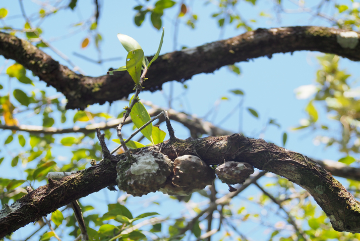
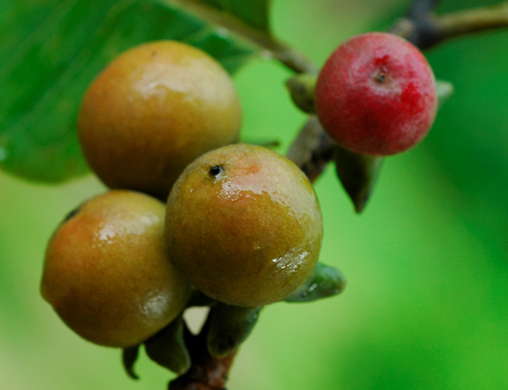

สมุนไพรไทย 22 ชนิดเสี่ยงสูญพันธุ์ ประกาศคุ้มครองและควบคุม 7 ชนิด
22 สมุนไพรที่อาจสูญพันธุ์ เร่งปลูกทดแทน
1.ถั่วดินโคก
3.เทพทาโร
5.มะตูมนิ่ม
7.มะหาด

9.เร่ว

11.หัวร้อยรู
13.กระทุ่มนา

15.ขันทองพยาบาท

17.จุกโรหินี

19.ชะเอมไทย

21.ชิงชี่

2.ตับเต่า
4.นางแย้มป่า

6.ปลาไหลเผือก

8.พังคี

10.มะคังแดง
12.สะค้าน

14.สารภีป่า

16.อบเชยไทย

18.เฉียงพร้านางแอ
20.เถาเอ็นอ่อน

22.เปราะหอม

สธ. ประกาศรายชื่อ “สมุนไพรไทย” 22 ชนิดเสี่ยงสูญพันธุ์ เหตุเติบโตช้า เมื่อใช้ต้องใช้ทั้งต้น หรือทั้งราก หรือใช้บ่อยจึงรักษาได้ คัดเลือกสมุนไพร 7 ชนิด ออกประกาศคุ้มครองและควบคุม ผู้ครอบครองต้องแจ้งจำนวนที่มี เพื่อทำแผนการใช้และการปลูกทดแทน
นายนันทศักดิ์ โชติชนะเดชาวงศ์ ผู้อำนวยการกองคุ้มครองภูมิปัญญาการแพทย์แผนไทยและพื้นบ้านไทย กรมพัฒนาการแพทย์แผนไทยและการแพทย์ทางเลือก กระทรวงสาธารณสุข (สธ.) กล่าวว่า ขณะนี้มีสมุนไพรไทย 22 ชนิด ที่เสี่ยงอาจจะสูญพันธุ์ได้ ประกอบด้วย 1. ถั่วดินโคก 2. เทพทาโร 3. มะตูมนิ่ม 4. มะหาด 5. เร่ว 6. หัวร้อยรู 7. กระทุ่มนา 8. ขันทองพยาบาท 9. จุกโรหินี 10. ชะเอมไทย 11. ชิงชี่ 12. ตับเต่า 13. นางแย้มป่า 14. ปลาไหลเผือก 15. พังคี 16. มะคังแดง 17. สะค้าน 18. สารภีป่า 19. อบเชยไทย 20. เฉียงพร้านางแอ 21. เถาเอ็นอ่อน และ 22. เปราะหอม
“ตามปกติแต่ละจังหวัดจะมีการจดทะเบียนรายชื่อสมุนไพรที่มีอยู่ในจังหวัดนั้นๆ แบ่งออกเป็น 3 ประเภท คือ 1. สมุนไพรเพื่อการศึกษา 2. สมุนไพรพืชเศรษฐกิจ และ 3. สมุนไพรเสี่ยงอาจสูญพันธุ์ โดยจะมีคณะผู้เชี่ยวชาญเข้ามาจัดทำข้อมูลของสมุนไพรทั้ง 3 ประเภท จากนั้นได้เลือกออกมาเป็น 22 ชนิด ที่เสี่ยงอาจจะสูญพันธุ์ เนื่องจากเป็นสมุนไพรที่เติบโตช้า เมื่อจะใช้ต้องใช้ทั้งต้น บางชนิดใช้ทั้งราก และต้องใช้บ่อยจึงจะสามารถรักษาอาการได้” นายนันทศักดิ์ กล่าว
นายนันทศักดิ์ กล่าวว่า คณะกรรมการคุ้มครองและส่งเสริมภูมิปัญญาการแพทย์แผนไทยได้ประชุมหารือกัน โดยเลือกสมุนไพร 6 ชนิดจาก 22 ชนิดขึ้นมา คือ ถั่วดินโคก หรือ พิษนาศน์ เทพทาโร มะตูมนิ่ม มะหาด เร่ว และ หัวร้อยรู นอกจากนี้ ยังเสนอสมุนไพร “กระวาน” ขึ้นมาเป็นพิเศษด้วยอีกชนิดหนึ่ง เพื่อประกาศคุ้มครองและเป็นสมุนไพรที่ต้องควบคุม โดยหากใครมีสมุนไพร 7 ตัวนี้อยู่ในครอบครองไม่ได้ถือว่ามีความผิด เพียงแต่ต้องแจ้งมาทาง สธ. ให้รับทราบว่ามีอยู่เท่าใด เพื่อที่จะจัดทำแผนส่งเสริมการปลูกต่อไป เช่น บริษัทใดมีสมุนไพร 7 นี้อยู่ ใช้ผลิตยาไปเท่าใด ต้องปลูกทดแทนเท่าใด เพื่อไม่ให้สูญพันธุ์ เป็นต้น